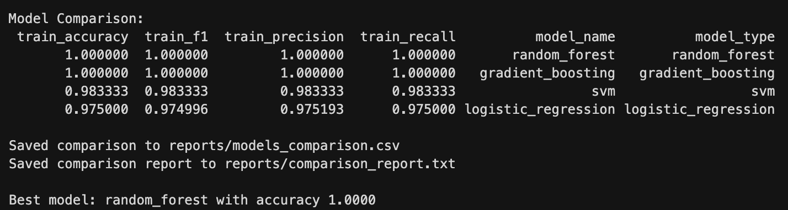
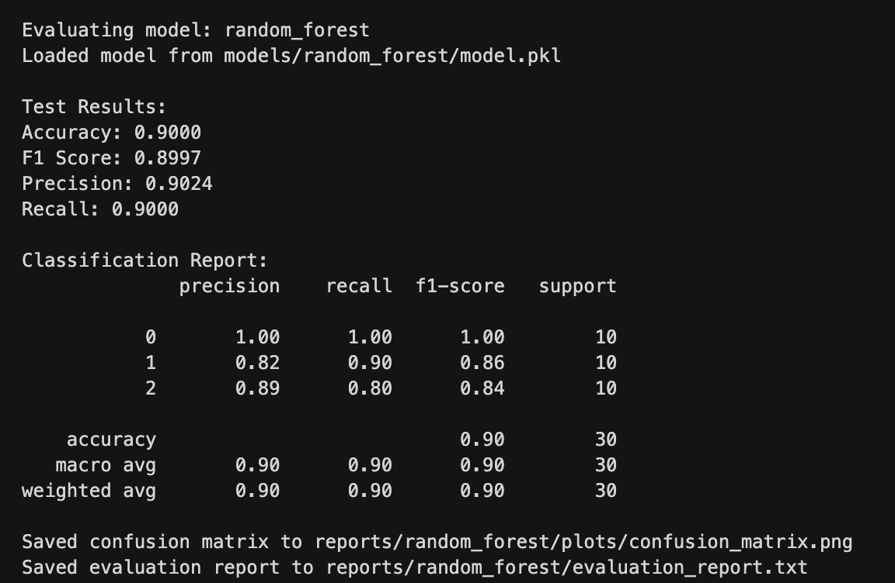

Отчет по домашней работе №4
1. Настройка Snakemake
Workflow для ML-пайплайна
Создан Snakefile с полным ML-пайплайном:
Этапы пайплайна:
-
prepare_data - Подготовка и разделение данных
-
Input:
data/raw/iris.csv - Output:
train.csv,test.csv,metadata.json -
Параметры: test_size, random_state, target_col
-
train_model - Обучение модели с Hydra
-
Input: train данные + metadata
- Output: модель (pkl) + метрики (json)
-
Конфигурация загружается из
config/models/{model}.yaml -
evaluate_model - Оценка модели
-
Input: test данные + модель
- Output: отчет + confusion matrix
-
Создает визуализации результатов
-
compare_models - Сравнение всех моделей
- Input: метрики всех моделей
- Output: сводный отчет + CSV с рейтингом
Зависимости между этапами
Зависимости DAG:
Кэширование и параллелизм
Кэширование:
- Snakemake автоматически кэширует результаты
- Пересчитывает только измененные этапы
- Проверка по временным меткам файлов
Параллельное выполнение:
Запуск с параллельными задачами:
2. Настройка Hydra
Структура конфигураций
config/
├── pipeline_config.yaml # Главная конфигурация
└── models/
├── logistic_regression.yaml
├── random_forest.yaml
├── gradient_boosting.yaml
└── svm.yaml
Конфигурации моделей
Пример: Random Forest
model:
name: "RandomForest"
type: "random_forest"
parameters:
n_estimators: 100
max_depth: 10
min_samples_split: 2
min_samples_leaf: 1
random_state: 42
training:
cross_validation: true
cv_folds: 5
mlflow:
log_model: true
register_model: true
model_name: "random_forest_iris"
Валидация конфигураций
Hydra автоматически валидирует:
- Типы параметров
- Обязательные поля
- Структуру YAML
Композиция конфигураций
Используется иерархическая структура:
- Базовая конфигурация (
pipeline_config.yaml) - Специфичные для модели (
models/*.yaml) - Динамическая загрузка через Hydra API
Пример загрузки:
with initialize_config_dir(config_dir=config_dir, version_base=None):
cfg = compose(config_name=config_name)
3. Интеграция и тестирование
Интеграция Snakemake + Hydra
Скрипт scripts/train_with_hydra.py объединяет оба инструмента:
# Загрузка конфигурации Hydra
with initialize_config_dir(config_dir=config_dir):
cfg = compose(config_name=config_name)
# Получение параметров из Hydra
model = get_model(cfg.model.type, dict(cfg.parameters))
# Обучение с MLflow tracking
mlflow.sklearn.autolog()
model.fit(X, y)
Мониторинг выполнения
Создан скрипт scripts/monitor_pipeline.py:
- Анализ лог-файлов
- Проверка выходных файлов
- Сводка по всем моделям
- Визуальные индикаторы статуса
Уведомления
Реализованы через send_notification():
- Успешное завершение
- Ошибки выполнения
- Предупреждения
Воспроизводимость
- Фиксированные random_state
-
Детерминированный порядок выполнения
-
DAG определяет последовательность
-
Кэширование промежуточных результатов
-
Контейнеризация через Docker
Проверка воспроизводимости:
# Первый запуск
make pipeline
# Очистка
make pipeline-clean
# Повторный запуск - те же результаты
make pipeline
Файл: models_comparison.csv


4. Использование
Makefile команды
# Запуск полного пайплайна
make pipeline
# Dry run (показать план)
make pipeline-dry
# Очистка результатов
make pipeline-clean
# Визуализация workflow
make pipeline-viz
# Мониторинг выполнения
make pipeline-monitor
# Запуск + автоматический мониторинг
make pipeline-run
Добавление новой модели
- Создать конфигурацию
config/models/new_model.yaml - Добавить в
config/pipeline_config.yaml: - Запустить пайплайн: